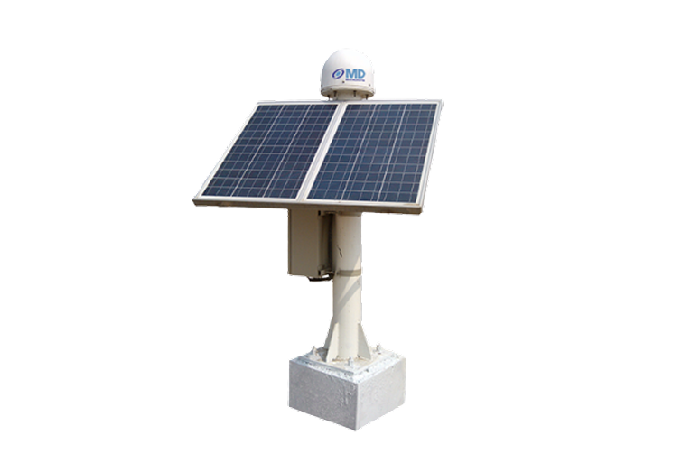
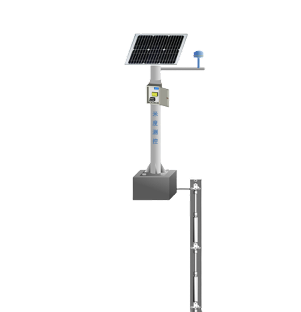
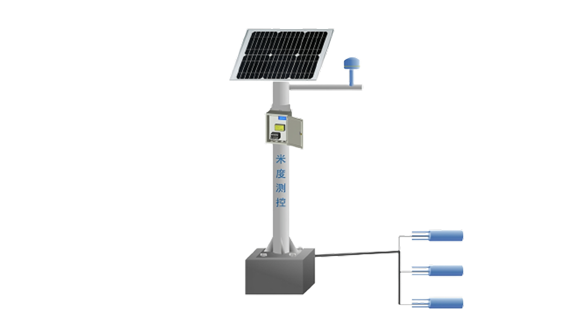
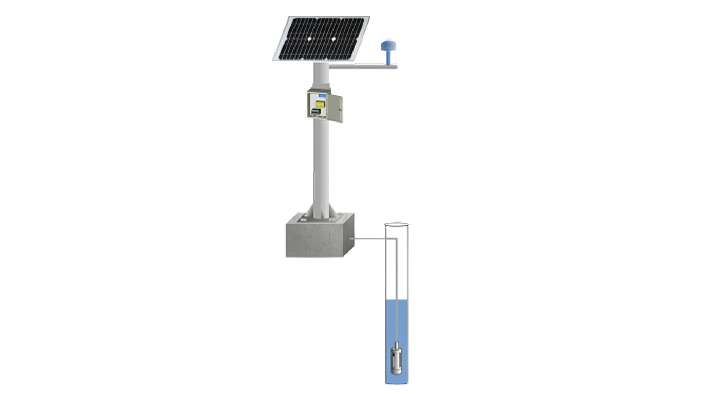
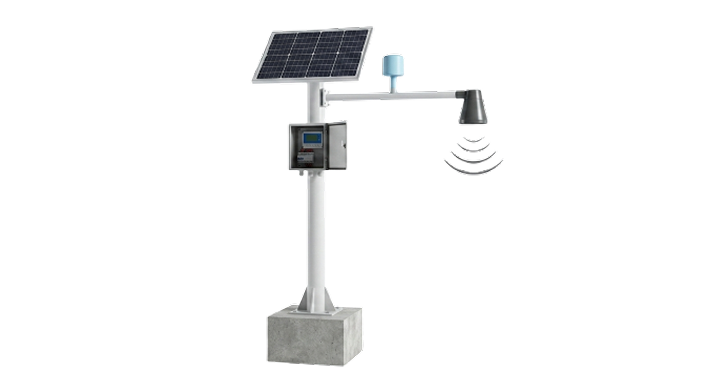
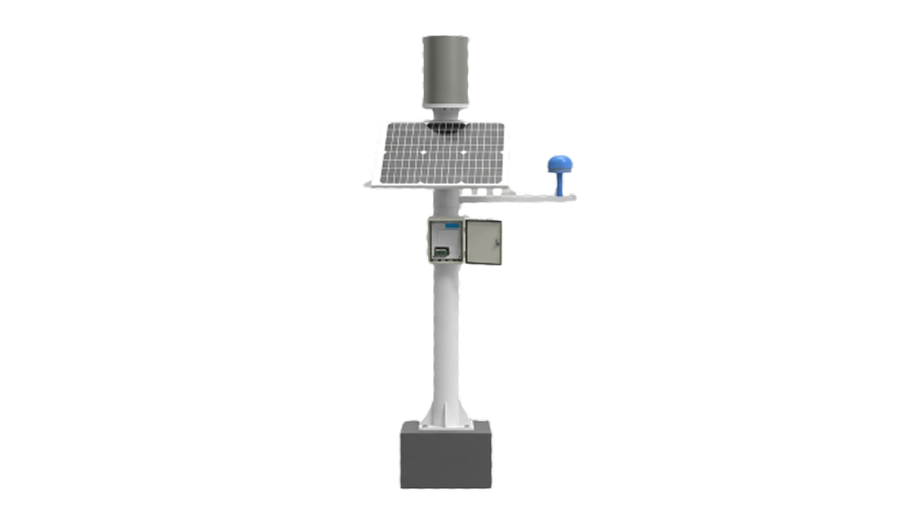

Mitigation Station
GNSS-MD40Surface Displacement Monitoring Station
A professional-grade GNSS deformation monitoring device engineered specifically for rigorous field conditions.
Integrated Disaster Monitoring
Self-powered, all-in-one monitoring stations engineered for immediate deployment in geological hazard zones — your first line of defence against landslides, debris flows, and slope failures.
Turnkey monitoring stations combining GNSS, tilt, rainfall, and seismic sensors with satellite uplink and automated multi-level alerting for geological hazard early warning.

A professional-grade GNSS deformation monitoring device engineered specifically for rigorous field conditions.

Facilitates continuous automated oversight for national geological hazard zones, mining sites, and water conservancy projects.

Engineered for high-precision soil moisture tracking in the most demanding field conditions.

Engineered for high-precision groundwater level and water pressure monitoring.

Engineered for high-precision mud and water level tracking.

A professional-grade station engineered for high-precision precipitation tracking.